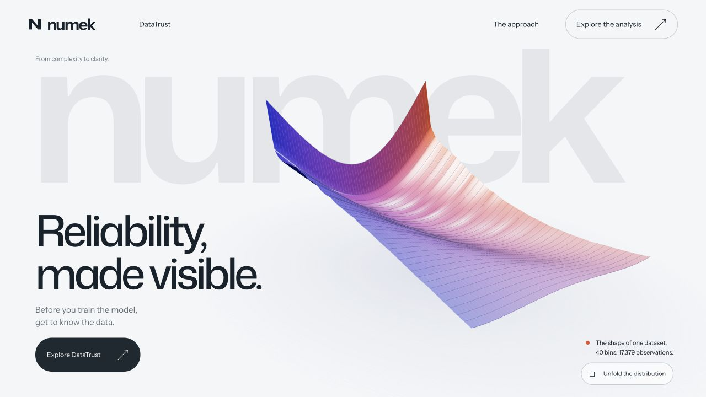
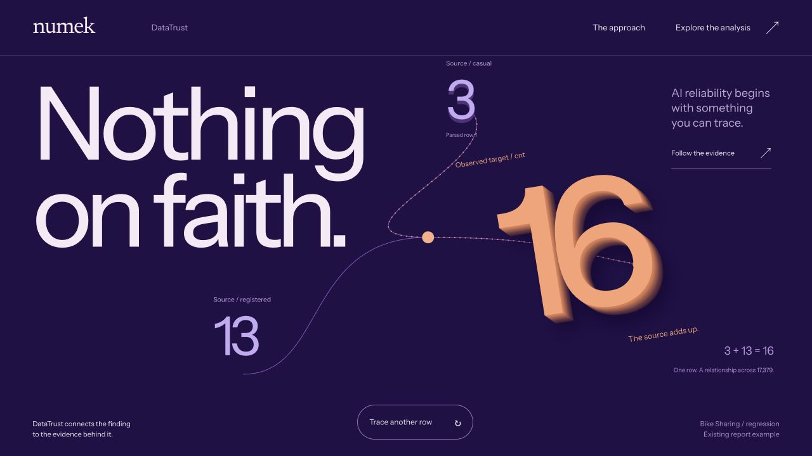
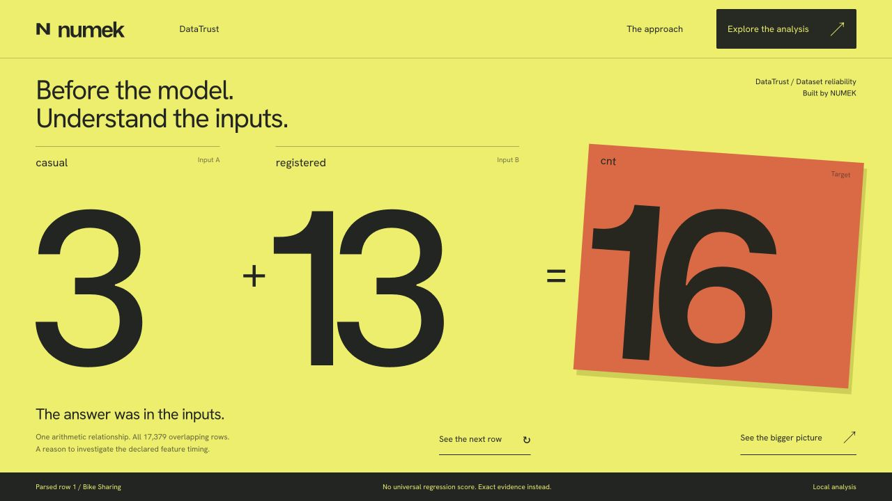
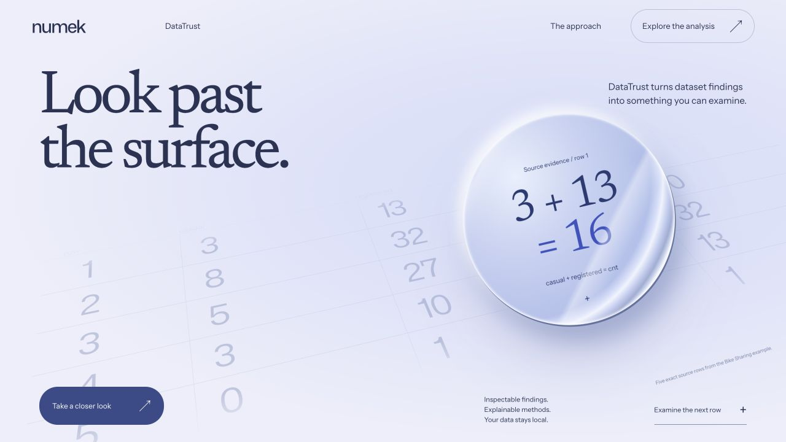
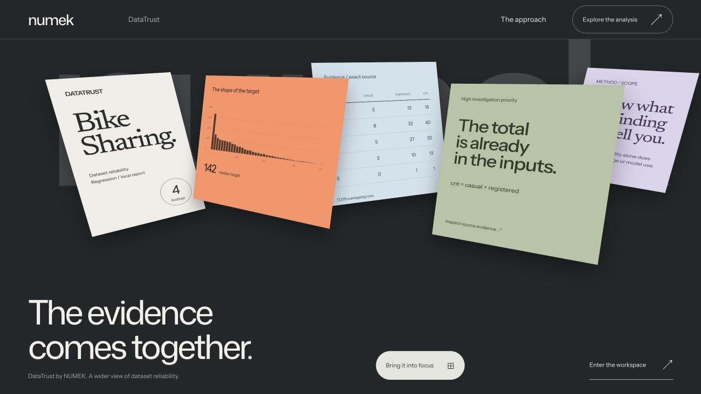

01 / Reliability, made visible.
A data form → a readable distributionA dimensional surface is the central subject. The public presentation opens into an aligned analytical work surface.

02 / Nothing on faith.
Source → relationship → investigationCurved evidence paths, exact source values and a target with physical depth. A report reader continues the identity.

03 / Before the model.
The data becomes the typographyA graphic identity built from a real arithmetic relationship. Different source rows change the entire composition together.

04 / Look past the surface.
A source table → a reading surfaceCool light, glass and precise source specimens. A guided reading surface pairs the question with context.

05 / The evidence comes together.
A spatial overview → a flat evidence atlasMultiple reading distances and evidence types form one investigation. A control aligns the planes for reading.